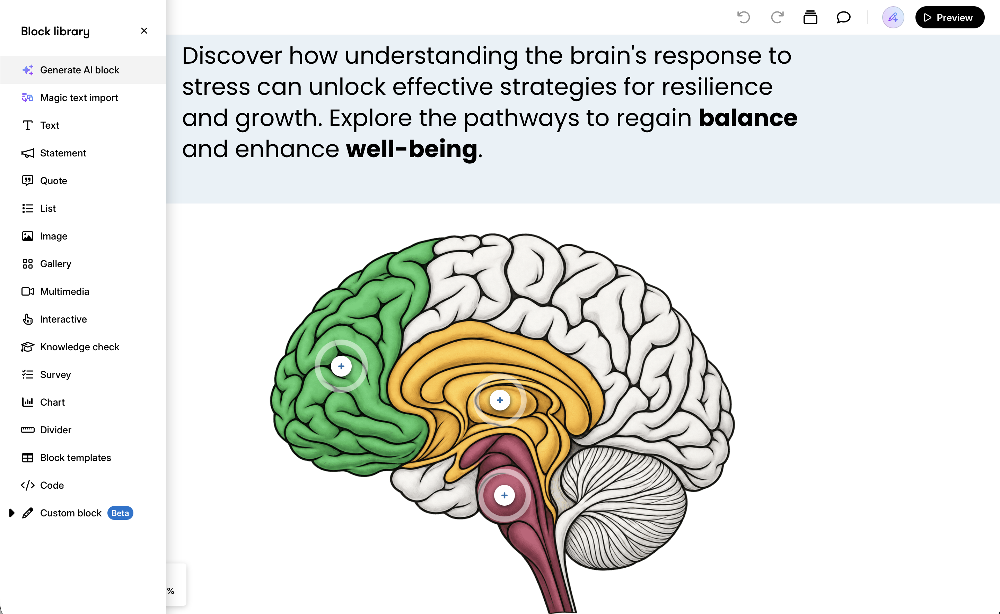
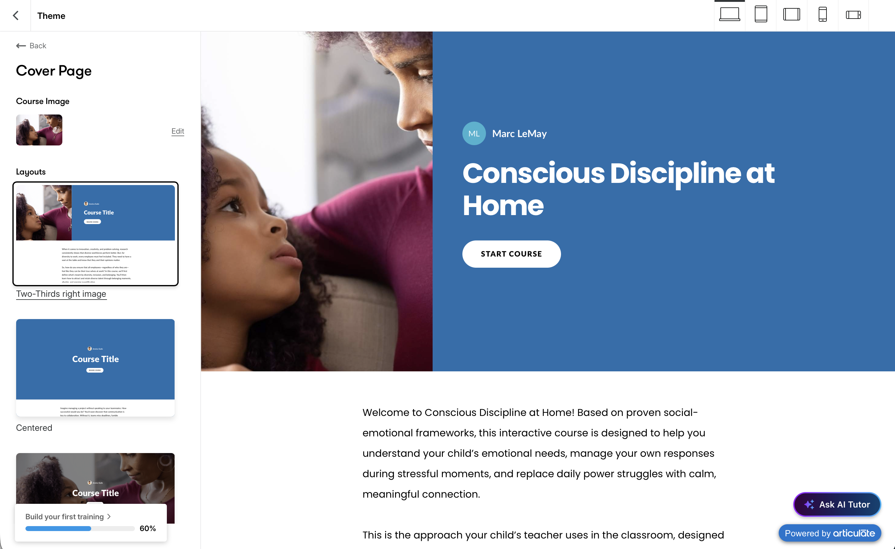
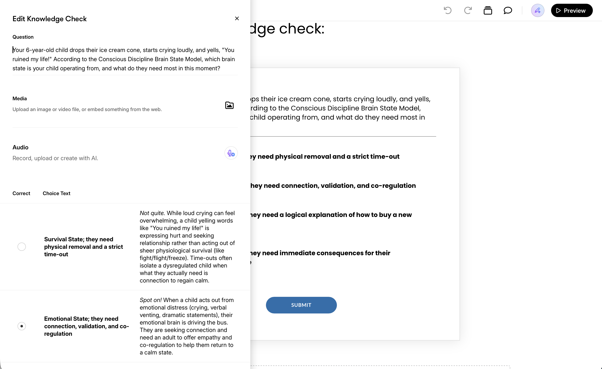

The parts of the Conscious Discipline at Home module a template was right for.
A one-day rebuild in Rise 360 to find out exactly where the tool’s strengths lie, and where it falls short.
Most of the module scores what a parent writes in their own words. Rise can’t do that; Storyline can, with custom JavaScript, which is the same kind of logic the module runs on its own. These parts are different: read once, checked with multiple choice, the same for every parent. That’s why I picked these to test.
Four lessons: what the approach is, the three brain states, the key terms, and the about page. One knowledge check with feedback on every option.
Time
One day, starting from no experience with the tool.
Built with
Rise 360, from the original module’s own copy. One image made outside Rise.

Block library, over the labeled graphic
What Rise did better
Anything standard was fast
The theme carried across every screen, content blocks looked good within seconds, the labeled brain graphic looked finished on the first try, and I could check the phone layout without leaving the editor. Its AI voice tool is also convincing, though I didn’t need it here.

Theme panel · the cover page
Where I hit walls
The first screen
I wanted the course to open the way the real module does, on a 7:40 a.m. morning. The cover page offered eight fixed layouts, no content blocks, and nowhere to put even the disclaimer. I kept hitting similar walls: I couldn’t reveal a list one point at a time, animate the brain state changes the way I wanted, or customize text size for phones. Rise tends to decide how each thing behaves, and the designer only fills in the content.

Knowledge check editor
When I’d choose it
Reading, multiple choice, a short deadline
When the content is reading plus multiple-choice checks, the brand is simple, the deadline is short, or the team already uses it. I learned nearly all of it in a day, so I’d use it without hesitation there. I’d also flag early any course that needs something it can’t do, like scoring a parent’s answer in their own words.
Where the line falls
The reading, the terms, and the multiple-choice check went in Rise; everything that responds to what a parent writes did not. How the rest was built is in the case study.